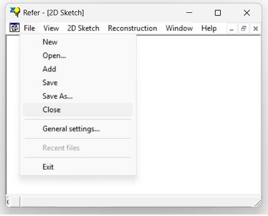
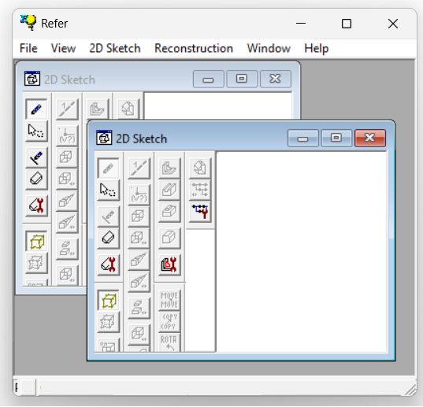

1.5.4.5 Close File
Opened files—or "documents", as referred to internally by REFER—can be closed via the Close command in the menu bar:

If a file is created or opened while another file is already open, both files will share the current application session. However, only the file with the active window will have the focus.

The Close command closes only the currently active file.